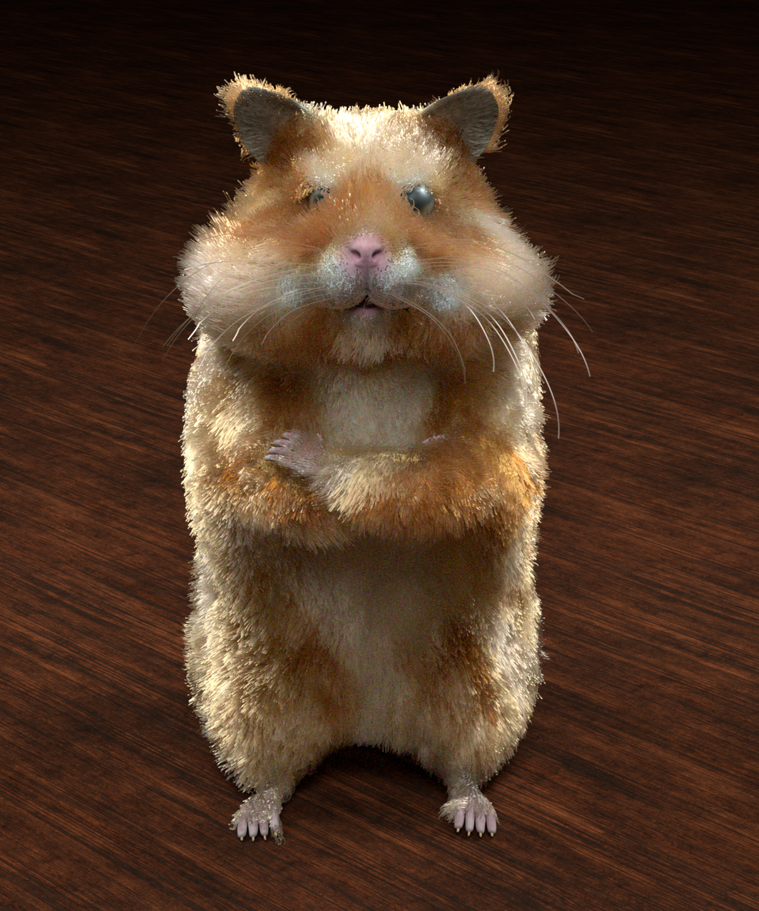
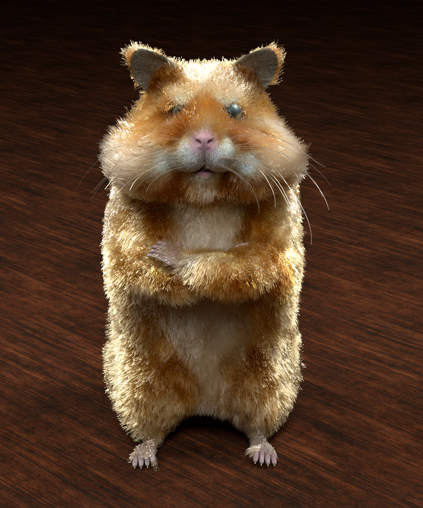
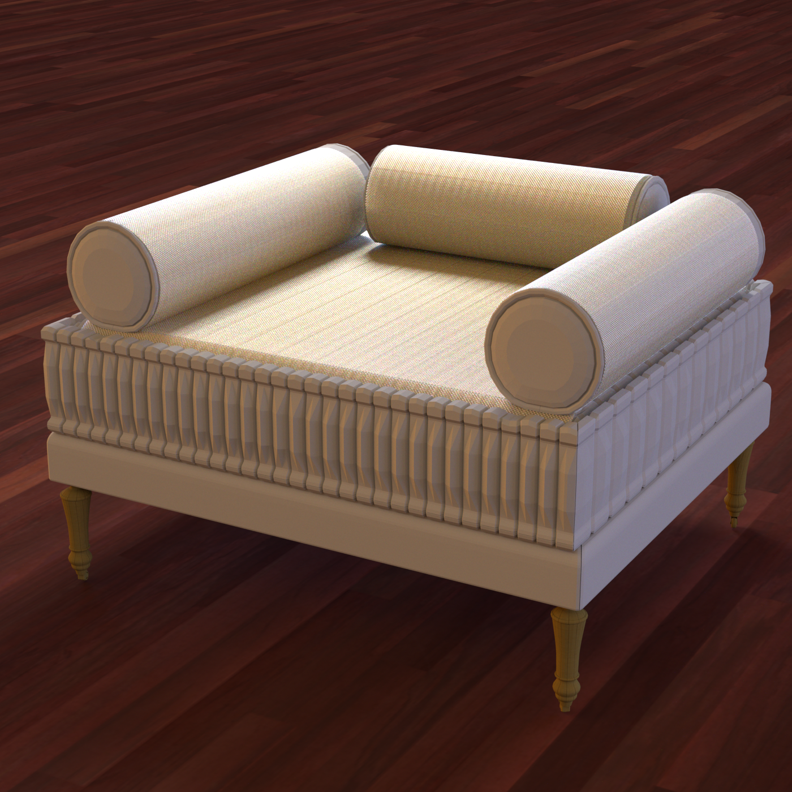
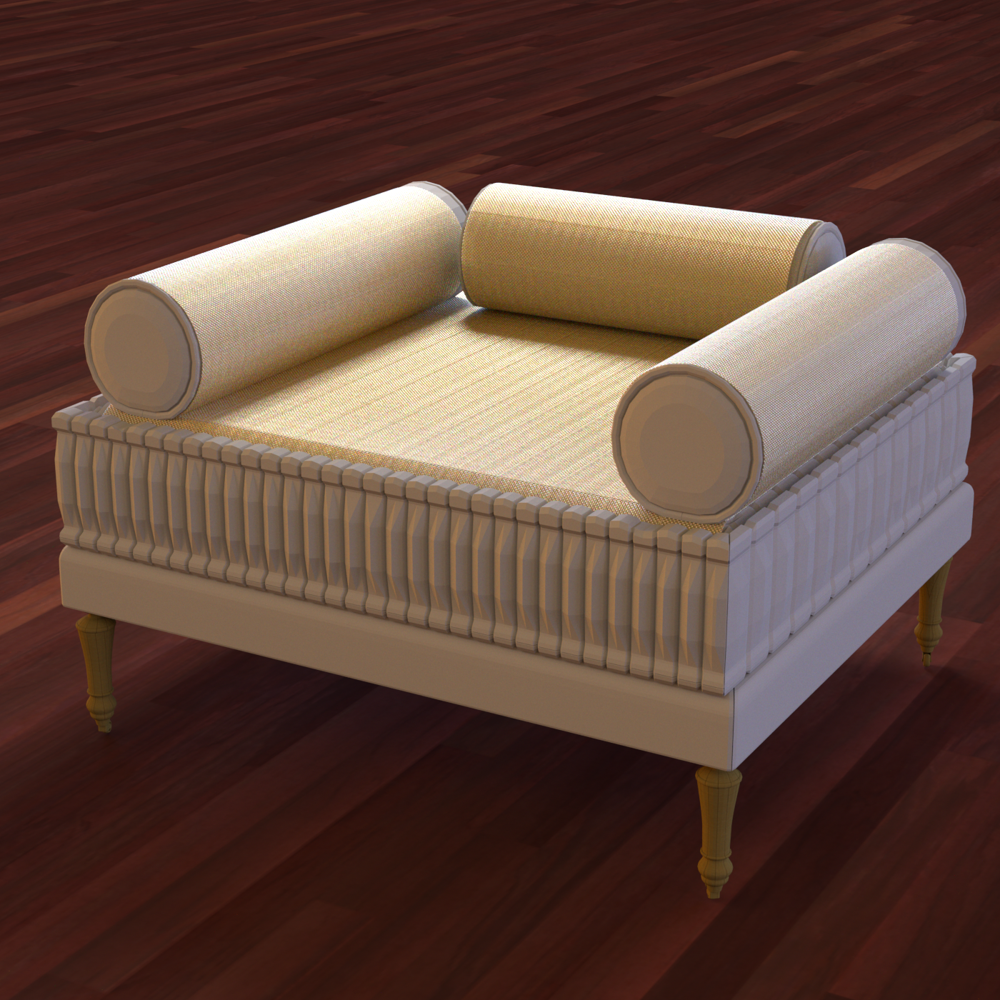
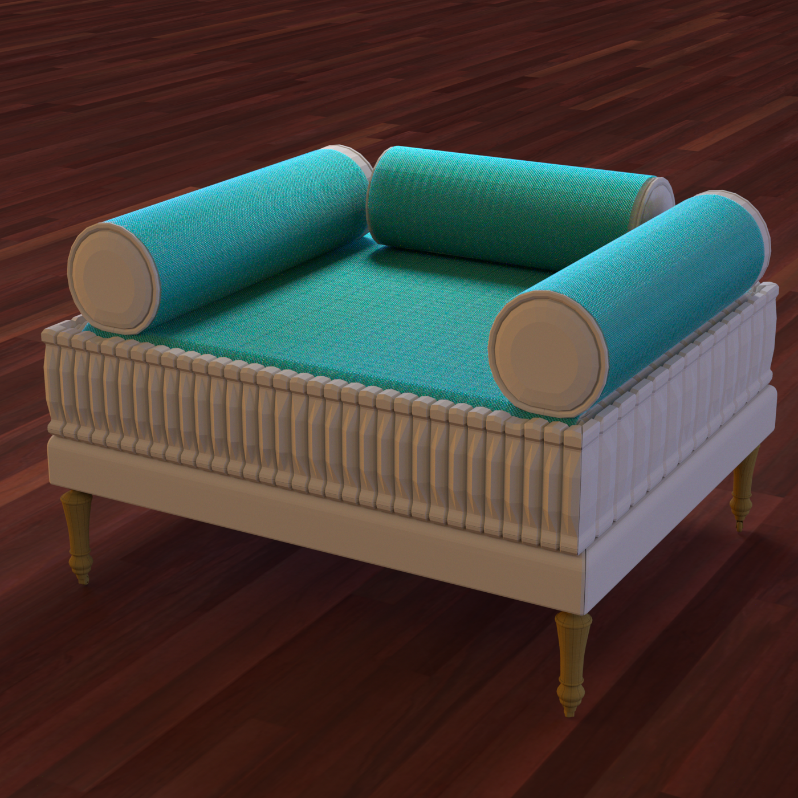
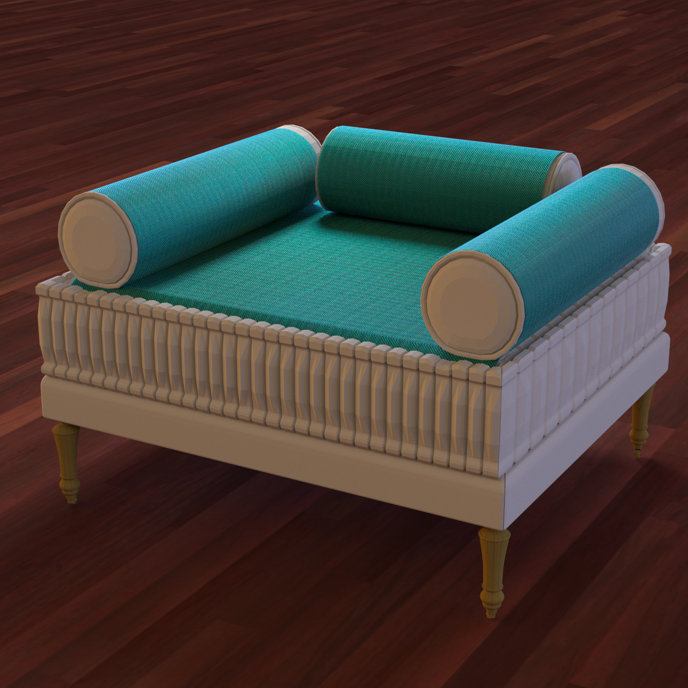
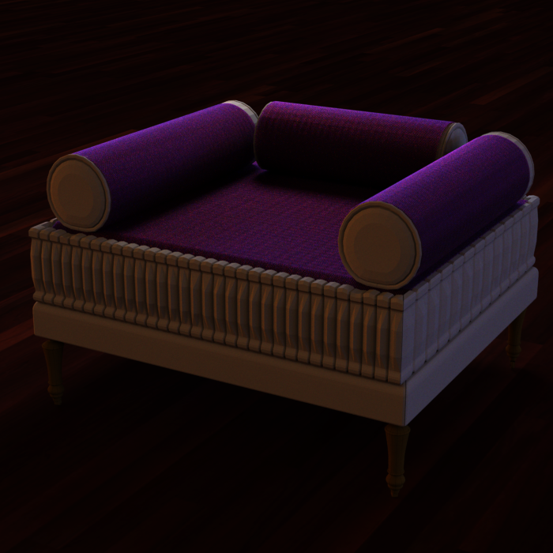
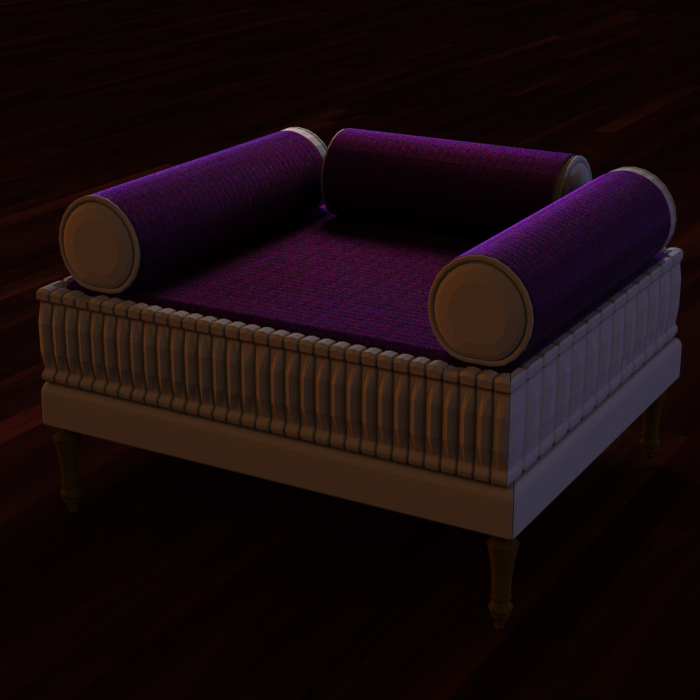
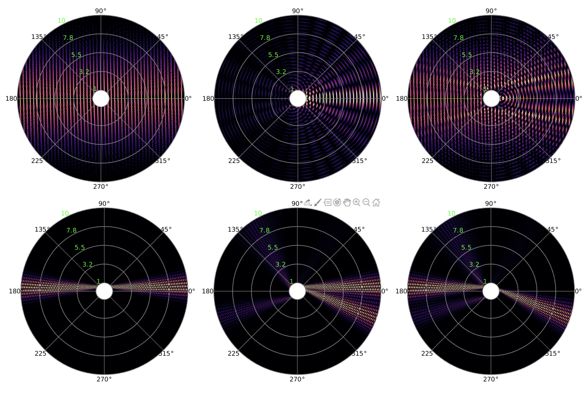

A Wave Optics Based Fiber Scattering Model
1Cornell University, 2University of Michigan
ACM Transactions on Graphics (SIGGRAPH Asia 2020)
Abstract
Existing fiber scattering models in rendering are all based on tracing rays through fiber geometry, but for small fibers diffraction and interference are non-negligible, so relying on ray optics can result in appearance errors. This paper presents the first wave optics based fiber scattering model, introducing an azimuthal scattering function that comes from a full wave simulation.
Solving Maxwell's equations for a straight fiber of constant cross section illuminated by a plane wave reduces to solving for a 3D electromagnetic field in a 2D domain, and
our fiber scattering simulator solves this 2.5D problem efficiently using the boundary element method (BEM). From the resulting fields we compute extinction, absorption, and far-field scattering distributions, which we use to simulate shadowing and scattering by fibers in a path tracer. We validate our path tracer against the wave simulation and the simulation against a measurement of diffraction from a single textile fiber. Our results show that our approach can reproduce a wide range of fibers with different sizes, cross sections, and material properties, including textile fibers, animal fur, and human hair. The renderings include color effects, softening of sharp features, and strong forward scattering that are not predicted by traditional ray-based models, though the two approaches produce similar appearance for complex fiber assemblies under many conditions.
Results
1. Forward scattering.
2. Highlight shape.
3. Interactive comparison.


Hamster fur has six different colors of elliptical fibers with semi-major axis 16um and semi-minor axis 10um.


Silk sofa


Polyester sofa (type 1)


Polyester sofa (type 2)
4. Gaussian beam

We illustrate two examples of a Gaussian beam illuminating a circular cross section. The three columns show the real part of the z component of the incident electric field, the scattered field and the total field respectively.
Acknowledgement
The authors would like to thank Zechen Zhang and Francesco Monticone for their helpful discussion on this project. We thank Sitian Chen for generating the woven pattern used in the sofa scene and Lingqi Yan for letting us use the converted hamster scene. We would also like to thank Under Armour for providing the textile sample. This work was supported by the National Science Foundation under grant IIS-1909467.